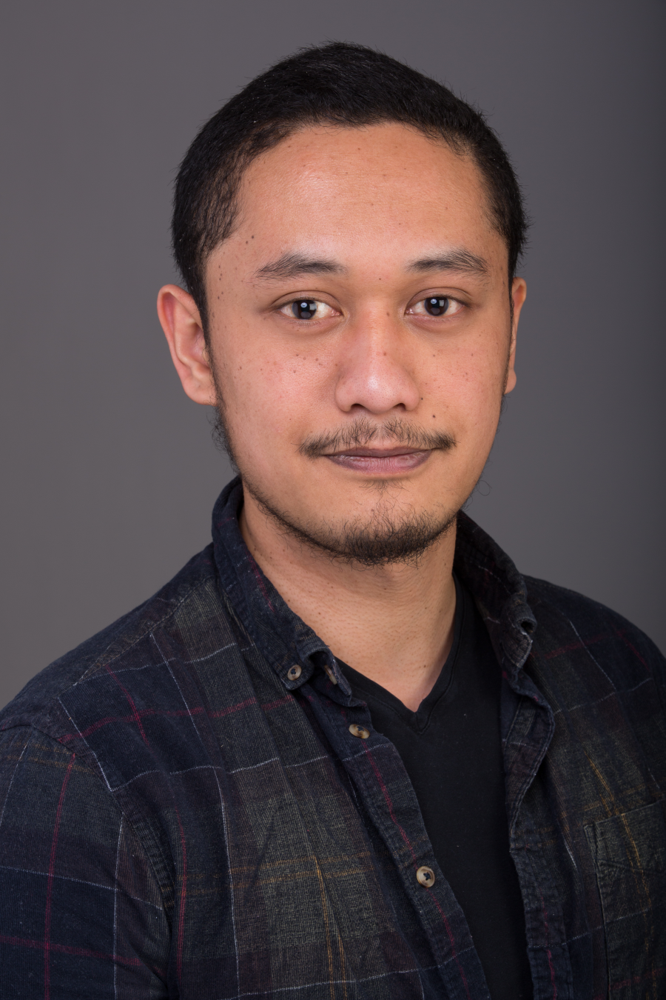
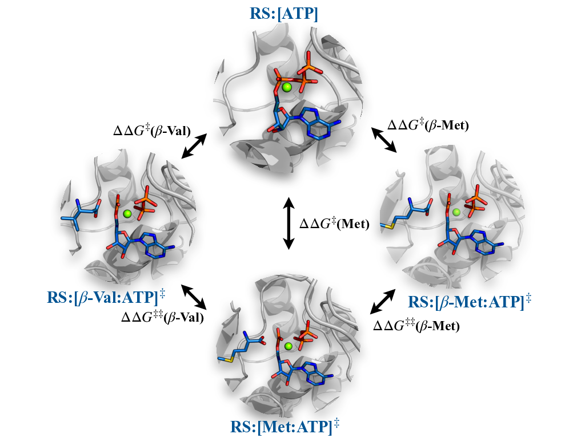
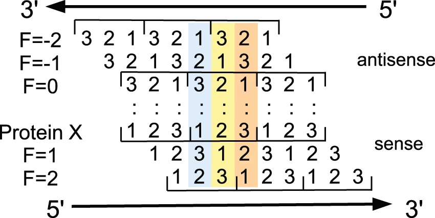
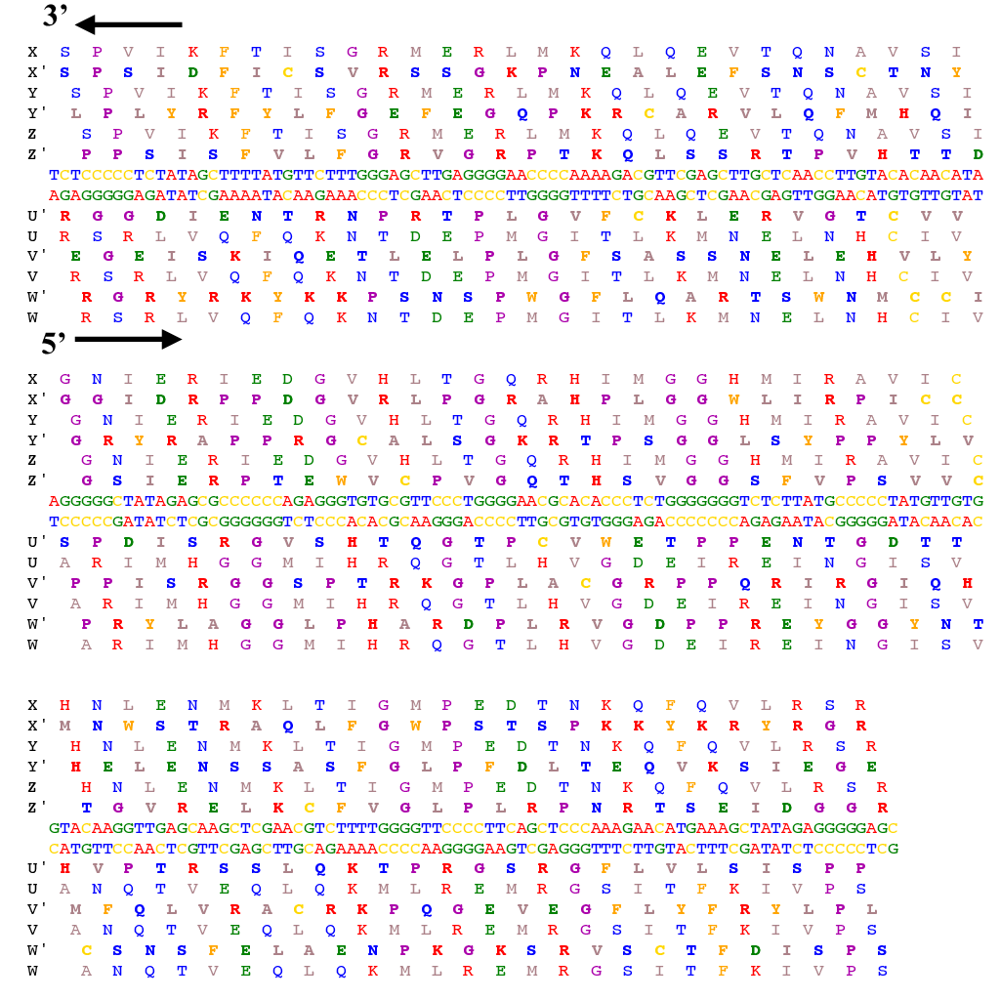

Vaitea Opuu, Ph.D
🏠 Inselstraße 22, 04103 Leipzig, Germany
✉ vopuu@mis.mpg.de
| |
|
 |
Hi! I'm a Postdoc in the group Structure of evolution, at the Max Planck Institute for Mathematics in Sciences (Leipzig, Germany), since December 2020. I currently work on computational methods to design RNA molecules. Those methods rely on statistical physics, neural networks, and dynamic programming.
After a Master in Bioinformatics at Paris-Saclay University (2015-2017), I started a PhD in Biology at Ecole Polytechnique (Institut Polytechnique de Paris). From 2017 to 2020, I worked on Computational Protein Design (CPD) under the supervision of Pr. Thomas Simonson in the Structural Biology of the Cell laboratory. I defended my PhD on the 29th of October 2020.
🎓 Research interests
I'm interested in biopolymers such as proteins, DNAs, or RNAs. Most of the works I contributed to were efforts toward the design of biologically relevant proteins. Using molecular mechanics, continuum electrostatics, Monte Carlo simulations, and molecular dynamic simulations, we aimed at understanding the subtle mutational interplays. Such works allow the detailed understanding of the mutational impact on catalysis, even when considering multiple reactions. Those approaches are implemented in the Proteus Software developed in Thomas Simonson's lab.

In a completely different aspect of bio-polymer design, I worked on the first algorithm for the design of overlapping genes. The algorithm designs one single DNA molecule in which at least two genes are encoded and both genes are overlapping. These genes may encode completely different proteins. This uses a dynamic programming scheme similar to the sequence alignment one.
 
📚 Publications
|
Journal
Adaptive Landscape Flattening Allows the Design of Both Enzyme: Substrate Binding and Catalytic Power Plos Computational Biology, 2020, doi Vaitea Opuu, Giuliano Nigro, Thomas Gaillard, Emmanuelle Schmitt, Yves Mechulam, Thomas Simonson |
|
Journal
A Physics-Based Energy Function Allows the Computational Redesign of a Pdz Domain Scientific Reports, 2020, doi Vaitea Opuu*, Young Joo Sun*, Titus Hou, Nicolas Panel, Ernesto J. Fuentes, Thomas Simonson |
|
Journal
Proteus software for physics-based protein design The Journal of Physical Chemistry Part A, 2020, doi David Mignon, Karen Druart*, Eleni Michael*, Vaitea Opuu*, Savvas Polydorides*, Francesco Villa*, Thomas Gaillard, Nicolas Panel, Georgios Archontis, Thomas Simonson |
|
Journal
Meet-U: educating through research immersion Plos Computational Biology, 2018, doi Nika Abdollahi, Alexandre Albani, Eric Anthony, Agnes Baud, Mélissa Cardon, Robert Clerc, Dariusz Czernecki, Romain Conte, Laurent David, Agathe Delaune, et al |
|
Journal
Computational Design of Fully Overlapping Coding Schemes for Protein Pairs and Triplets Scientific Reports, 2017, doi Vaitea Opuu, Martin Silvert, Thomas Simonson |
|
Chapter
In Methods in Molecular Biology: PDZ domains methods in Molecular Biology: PDZ domains, 2020 Nicolas Panel, Vaitea Opuu, Francesco Villa, David Mignon, Thomas Simonson |
|
Conference
Computational design of fully overlapping coding schemes for portein pairs and triplets (proceeding of) advances in systems and synthetic biology, page 97, 2018 Vaitea Opuu, Martin Silvert, Thomas Simonson |
|
Ph.D Thesis
Computational design of proteins and enzymes Institut Polytechnique de Paris, 2020, link Vaitea Opuu |